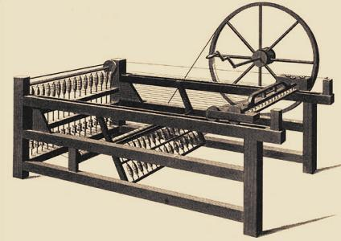

Fonógép
A fonás a fonal készítésének művelete, amelynek során rövid és vékony szálakból (szaknyelven: elemi szálakból) ezek párhuzamossá rendezésével és összesodrásával
összefüggő, hosszú, nagyjából hengeres szalagot képeznek további feldolgozás céljára. Tágabb értelemben fonáson mindazon technológiai műveletek összességét
értjük, amelyek végső eredménye a rövid elemi szálakból képzett, meghatározott állandó vastagságú és szilárdságú, egyenletes, csomómentes tetszőleges
hosszúságú fonal.
A legősibb fonási művelet a gyalogorsó (lyukas korongon keresztüldugott pálca) pörgetésével valósult meg úgy, hogy annak tengelyére a sodrott és
megnyálazott kócszálak felcsévélődtek. A fonal vagy fonál elemi szálait a hatékony összedolgozással még erősebbé vált súrlódási erő tartja lényegében össze.

Forrás
Fonógépről a kép